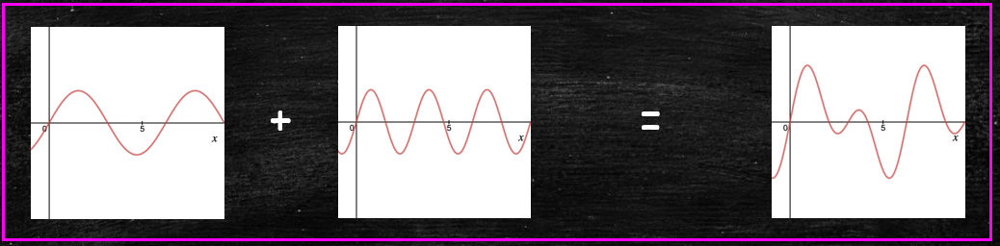

Advanced Calculus L3
- Periodic, odd and even functions
- Fourier series
- Fourier series motivation
- The principal of superposition
- Example
Periodic functions
Definition $f$ is a $\text{\textcolor{yellow}{periodic function}}$ if there is an $a>0$ such that \[ f(x+a) = f(x) \quad \forall x\in\mathbb{R} \] If this is the case then $a$ is called a period of $f$
- The period is not unique, but if there is a smallest such $a$ it is called the prime period of $f$
- Examples of periodic functions include ...
Properties of periodic functions
If $f, g$ are periodic functions with period $a$, then:- $f,g$ are also periodic functions with period $na, n\in\mathbb{N}$
- For any $\alpha, \beta\in \mathbb{R}$, $\alpha f+\beta g$ is periodic with period $a$
- $f\cdot g$ is periodic with period $a$
- For any $\lambda>0$, $f(\lambda x)$ is periodic with period $a/\lambda$
- For any $\alpha\in \mathbb{R}$ \[ \color{white}{\boxed{\color{white} \int_0^a f(x)\mathrm{d}x = \int_\alpha^{\alpha+a}f(x)\mathrm{d}x }} \]
Proof of last property
Assuming $\alpha< a$ \[ \begin{align*} \int_\alpha^{\alpha+a}f(x)\mathrm{d}x &= \int_\alpha^a f(x)\mathrm{d}x+\int_{a}^{\alpha+a}f(x)\mathrm{d}x\\ &=\int_\alpha^a f(x)\mathrm{d}x+\int_0^\alpha f(y+a)\mathrm{d}y \\ &=\int_\alpha^a f(x)\mathrm{d}x+\int_0^\alpha f(y)\mathrm{d}y \\ &= \int_0^af(x)\mathrm{d}x \quad\text{as required} \end{align*} \] The third line follows since $f(y+a)=f(y)$ i.e. $f$ is periodic with period $a$Even and odd functions
Definition Algebraicly $f$ is even if and only if $f(-x)=f(x)$ for all $x$ in the domain of $f$
Geometrically, a function $f(x)$ is even if it admits reflective symmetry about the $y$-axisSome familiar examples include ...
Even and odd functions
Definition Algebraicly $f$ is odd if and only if $f(-x)=-f(x)$ for all $x$ in the domain of $f$
Geometrically, a function $f(x)$ is even if it admits rotational symmetry with respect to the originSome familiar examples include ...
Properties of even and odd functions
The following properties of even/odd functions will be important for us- the product of two even or two odd functions is even
- the product of an odd and even function is odd
Proof (first statement (even case))
Let $f, g$ be two even functions and let $h(x) = f(x)g(x)$ be their product. Then \[ h(-x) = f(-x)g(-x) = f(x)g(x) = h(x) \] proving the result
The remaining are proved similarly
Properties of even and odd functions
The integrals of even and odd functions over symmetric intervals about the origin simplify considerablyAs alluded to in the illustration, for even functions we have
$\color{yellow}{\boxed{\color{white}\int_{-L}^Lf(x)\mathrm{d}x = 2\int_0^L f(x)\mathrm{d}x}}$
See the video to the right for an
illustration of this important property
Properties of even and odd functions
The integrals of even and odd functions over symmetric intervals about the origin simplify considerablyAs alluded to in the illustration, for odd functions we have
$\color{yellow}{\boxed{\color{white}\int_{-L}^Lf(x)\mathrm{d}x = 0}}$
See the video to the right for an
illustration of this important property
Advanced Calculus L3
- Periodic, odd and even functions
- Fourier series
- Fourier series motivation
- The principal of superposition
Fourier series motivation
It should not be too hard to convince yourself that the function \[u(x,t)=\sin(k(x-ct))\] is a solution to the wave equation \[\frac{\partial^2 u}{\partial t^2} = c^2\frac{\partial^2 u}{\partial x^2}\] Now since the wave equation is linear the sum of two (or more) solutions is also a solution i.e.... Perhaps surprisingly, the answer was yes. At least for the types of functions that arise in practice.
In fact he found that $2\pi$-periodic functions can be written as \[ \color{red}{\boxed{\color{white} f(x)\sim \frac{a_0}{2} + \sum_{n=1}^\infty \left(a_n\cos(nx)+b_n\sin(nx)\right)}} \]
Euler integrals
To see where the Euler integrals come from let us assume that the FS over page converges.Then we can multiply both sides of the equation by $\cos(mx)$ and integrate between $-\pi$ and $\pi$ to obtain \[ \begin{align}\nonumber \int_{-\pi}^\pi f(x)\cos(mx)\mathrm{d}x &= \frac{a_0}{2}\int_{-\pi}^\pi\cos(mx)\mathrm{d}x + \\\nonumber &\sum_{n=1}^\infty\left(a_n\int_{-\pi}^\pi f(x)\cos(nx)\cos(mx)\mathrm{d}x\right.+\\ &\left. b_n\int_{-\pi}^\pi f(x)\sin(nx)\cos(mx)\mathrm{d}x\right) \end{align} \]
In the case $n=0$ we simply integrate both sides of the FS equation as follows \[ \begin{align*} \int_{-\pi}^\pi f(x)\mathrm{d}x &= \frac{a_0}{2}\int_{-\pi}^\pi\mathrm{d}x + \sum_{n=1}^\infty\left(a_n\int_{-\pi}^\pi \cos(nx)\mathrm{d}x + \right.\\ &\left.b_n\int_{-\pi}^\pi \sin(nx)\mathrm{d}x\right)\\ &=\frac{a_0}{2}\pi\implies \color{red}{\boxed{\color{white}a_0 = \frac{1}{\pi}\int_{-\pi}^\pi f(x)\mathrm{d}x}} \end{align*} \] We can work out $b_n$ similarly (except we multiply by $\sin(mx)$)
Advanced Calculus L3
- Periodic, odd and even functions
- Fourier series
- Fourier series motivation
- The principal of superposition
- Example
Computing $\color{red}{\boxed{\color{white}\displaystyle a_n = \int_{-\pi}^\pi f(x)\cos(nx)\mathrm{d}x}}$
Since $f(x)$ is odd we can compute \[ \begin{align*} \int_{-\pi}^\pi f(x)\cos(nx)\mathrm{d}x&= 2\int_0^\pi f(x)\cos(nx)\mathrm{d}x\\ &=2\int_0^\pi \cos(nx)\mathrm{d}x = \Big[~\frac{1}{n}\sin(nx)~\Big]_0^\pi\\ &= 0 \quad\text{(we already new this... why?)} \end{align*} \] Also, note that since $f(x)$ is odd we have that $a_n=0$
\[ \begin{align*} \frac{1}{\pi}\int_{-\pi}^\pi f(x)\sin(nx)\mathrm{d}x&= \frac{2}{\pi}\int_0^\pi f(x)\sin(nx)\mathrm{d}x\\ &= \frac{2}{\pi}\int_0^\pi \sin(nx)\mathrm{d}x\\ &= \frac{2}{\pi}\Big[-\frac{1}{n}\cos(nx)~\Big]_0^\pi\\ &= \frac{2}{n\pi}\left(1-(-1)^n\right) \Big(= b_n\Big) \end{align*} \]
to get an approximation to $\pi$
Evaluating $f$ at $\pi/2$ gives \[ f\left(\frac{\pi}{2}\right) = 1 = \frac{2}{\pi}\left(1-\frac{1}{3}+\frac{1}{5}-\cdots\right) \] so that \[ \pi = 4-\frac{4}{3}+\frac{4}{5}-\frac{4}{7}\cdots \]

Lecture 3 Review
- In this lecture we covered
- Periodic, odd and even functions
- Introduced Fourier series
- An example of how to compute FS
- After this lecture you should
- Know what periodic, odd and even functions are
- Understand the principle of linear superposition and have a basi idea of what a FS is